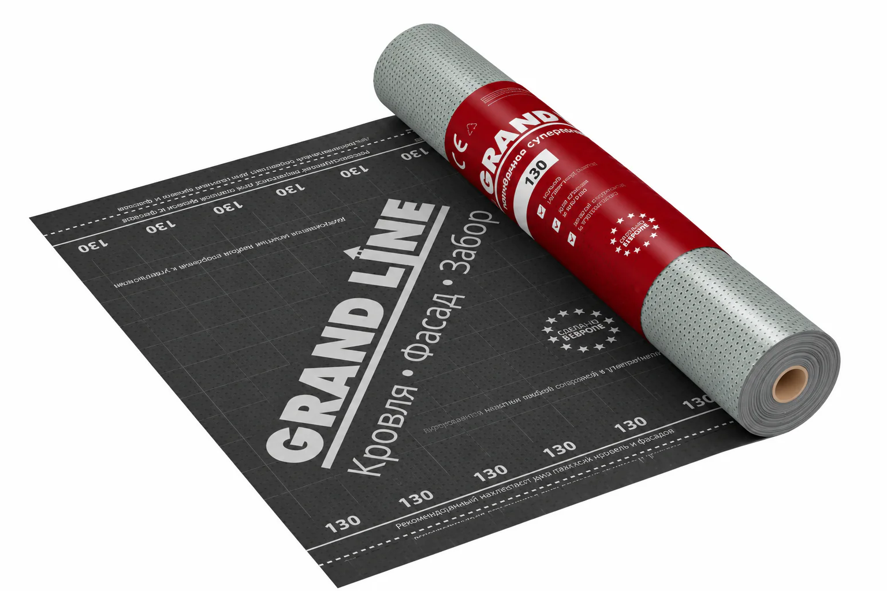

Полотно по скату
Раскатываю мембрану по стропилам до обрешётки и покрытия. 180 ₽/м² — это монтаж этого слоя.
Ставлю наружное полотно под кровельным покрытием. В прайсе эта работа называется «гидроизоляция / ВВЗ»: ВВЗ — сокращение от ветровлагозащиты. Цена — 180 ₽/м². Это не пароизоляция со стороны помещения. Работаю лично в Архангельске, Северодвинске и Новодвинске. Материалы в цену работ не входят.
от 180 ₽/м²
Позвонить: +7 921 484-08-74
Полотно закрывает дерево и утеплитель от воды, которая прошла покрытие, и от ветра в подкровельном зазоре. Схему слоёв копировать с чужой крыши не буду: холодный чердак и утеплённый скат устроены по-разному.
Раскатываю мембрану по стропилам до обрешётки и покрытия. 180 ₽/м² — это монтаж этого слоя.
Соединяю полотнища так, чтобы слой был цельным. Марку ленты и тип мембраны на странице не назначаю: они зависят от крыши.
Обхожу трубу, стену и ендову, чтобы вода не заходила под полотно в обход покрытия.
Целый слой оставляю. Порванный не закрываю новым покрытием: влага останется на дереве. Такой участок может быть частью ремонта крыши.
Наружная мембрана и внутренняя пароизоляция стоят в прайсе рядом, но это разные слои. В цену 180 ₽/м² пароизоляция не входит.
Галочка «ВВЗ +180» в калькуляторе покрытий добавляет наружную мембрану к укладке материала. Пароизоляция туда не входит. Калькулятор считает покрытие, поэтому на этой странице его нет. Полный список — в прайсе.
По фото ската или чердака скажу, менять наружную мембрану или хватит ремонта узла. Пароизоляцию из помещения в эту оценку не подмешиваю. Это не итоговая смета.
Их легко смешать из-за слова «плёнка». Место в крыше у них разное.
Ветровлагозащита, она же гидроизоляция в строке прайса, лежит над стропилами и под обрешёткой. Диффузионная это мембрана или глухое полотно — зависит от конструкции, на странице один тип не обещаю.
Пароизоляция, 200 ₽/м², стоит со стороны комнаты и держит пар из дома. Она не заменяет наружные 180 ₽/м² и не входит в них.
Если между мембраной и покрытием нужен воздух, его даёт контробрешётка. Это отдельная работа, 250 ₽/м², не часть цены мембраны.
На стропила слои садятся по-разному у металла, мягкой кровли и фальца. Состав называю по этой крыше, до начала работ.
Реальные кровельные работы, выполненные мной.
Пришлите вид крыши и, если чердак открыт, то, что видно под покрытием.
Отделяю наружную мембрану от пароизоляции изнутри. Одну схему пирога на все дома не переношу.
Согласую 180 ₽/м² и, если она нужна, пароизоляцию 200 ₽/м². Лишний слой в смету не ставлю.
Укладываю полотно до обрешётки и покрытия. На выполненные работы — гарантия 1 год.
Ветровлагозащита: наружная подкровельная мембрана. В прайсе строка так и называется — «Монтаж гидроизоляции / ВВЗ», 180 ₽/м².
Нет. Пароизоляция стоит изнутри помещения и стоит 200 ₽/м². Она не входит в 180 ₽/м² и не заменяет наружное полотно.
Нет. Холодный чердак, утеплённый скат и разное покрытие требуют разного состава. Его согласую по конкретной крыше, до работ.
Если она целая — да. Порванную не закрываю новым покрытием. Тогда смотрю, хватает ли ремонта или мембрана меняется вместе с кровлей.
Да. Работаю в Архангельске, Северодвинске и Новодвинске.
По снимку отделю замену наружной мембраны от пароизоляции внутри. Тип полотна по фото не назначаю, если слоя не видно.